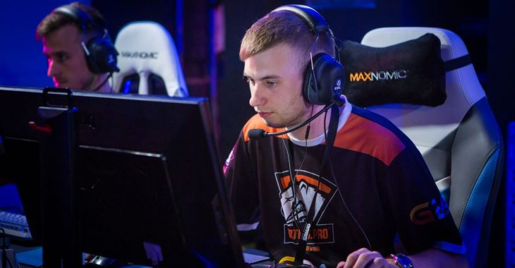

Paweł "byali" Bieliński
Polski zawodowy gracz e-sportowy w grach serii Counter-Strike. Grę w Counter-Strike’a rozpoczął od wersji 1.6 – grał w półprofesjonalnym zespole, tworząc formację BoomSlave (byali, Luz, Almost, Oplo, LASER). Od 2013 roku stał się graczem Counter-Strike: Global Offensive i doszedł do Game Faction, gdzie poznał Janusza „Snaxa” Pogorzelskiego, z którym 25 stycznia 2014 razem dołączyli do Virtus.pro. W listopadzie 2018 odszedł z drużyny, jednak 24 grudnia 2018 ogłoszono powrót zawodnika do składu. 29 kwietnia 2019 roku ogłosił odejście od Virtus.pro. W swojej karierze wygrał dotychczas indywidualnie ponad 562 000 dolarów amerykańskich w ramach nagród za zajmowane w turniejach miejsca. Łącznie w karierze wygrał 26 oficjalnych turniejów, 18 razy był drugi i 28 razy kończył swój udział na półfinałach (stan na 26.12.2018). W 2014 roku został wyróżniony 13. miejscem w czołowej dwudziestce zestawienia najlepszych graczy roku według serwisu HLTV.org.